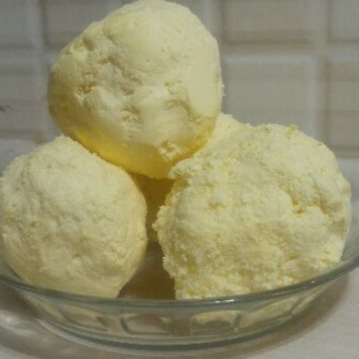
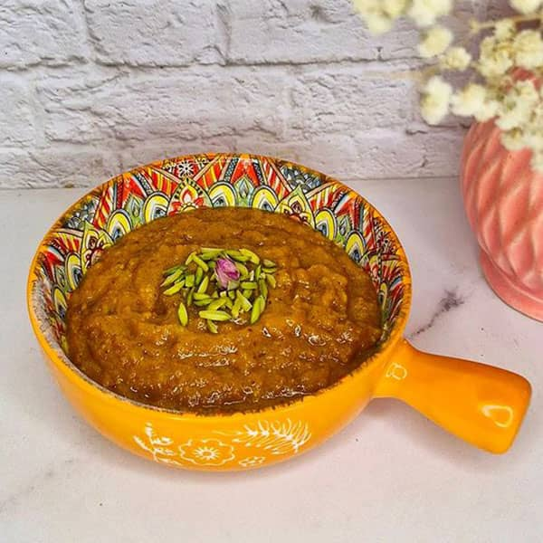
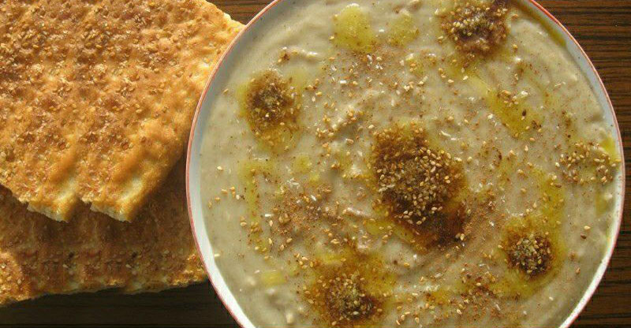
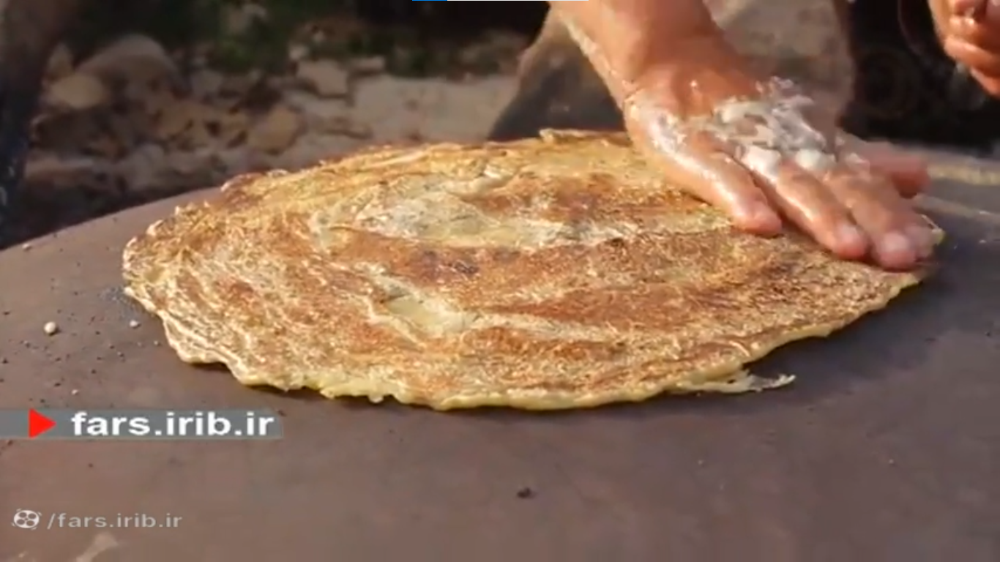

وعده اصلی
صبحانه




تنقلات
Madrid is in the middle of Spain, in the Community of Madrid. The Community is a large area that includes the city as well as small towns and villages outside the city. 7 million people live in the Community. More than 3 million live in the city itself.